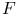
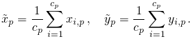
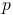
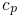
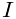
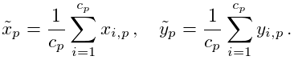

Centroid of connected components
This algorithm is based on segmentation of molecules which is performed by applying a user-defined threshold on the filtered image . Users also have the option to combine the thresholded image with the result of a watershed algorithm [3] applied to the image . This procedure was proposed in [1]. The position of each molecule is determined by computing the centroid of the relevant segmented object using
|  |
Here  indexes the objects,  is the number of elements in each object, and  and  are the integer pixel coordinates within each object. Segmented objects are determined as connected components by an algorithm based on a breadth-first search [2]. The watershed algorithm is based on the ImageJ ‘‘Find Maxima’’ function.
References
- [1] (2012) Wavelet analysis for single molecule localization microscopy. Optics Express 20 (3), pp. 2081–95. External Links: Document Cited by: Centroid of connected components.
- [2] (1997) The Art Of Computer Programming. 3rd edition, Vol. 1, Addison-Wesley, Boston. Cited by: Centroid of connected components.
- [3] (2007) Image Processing, Analysis, and Machine Vision. 3rd edition edition, Cengage Learning. Cited by: Centroid of connected components.
Generated on Sun Oct 4 04:17:27 2015 by LaTeXML ![[LOGO]]()